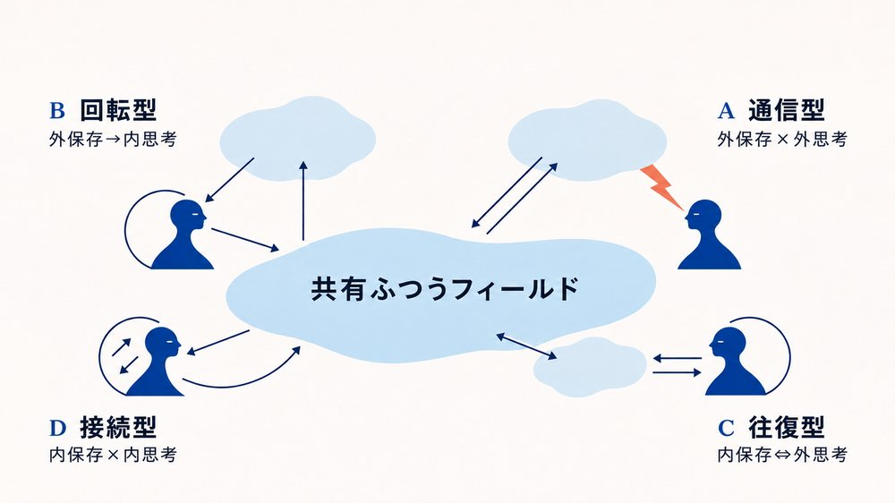

脳タイプ9について
前者後者の先にある、さらに具体的な仕組み。使用領域とスタイルの違いで、前者は4タイプ・後者は5タイプに分かれます。各タイプの要点をこのページでまとめて読めるようにしました。気になるタイプへジャンプしてください。
思考と保存を「内」でするか「外」でするか

前者のタイプ分けは、「思考」と「情報の保存」を「内（身体）」で行うか「外（身体の外）」で行うかによる、2×2の4タイプ分類です。
通信・同期型／放牧上手なスーパーバランサー
思考と保存の両方を「外」で処理するタイプ。場への感度が全タイプ随一で、自然と人が集まり、柔軟にバランスを取ります。こだわりが薄く、無限大のクラウド容量を活かせるのが強みです。
回転・改善型／社会を回す天然PDCAプレイヤー
保存は外、思考は内。"回ることで生きている"ような高い行動量を持ち、巻き込み力でナチュラルにPDCAを体現します。要領がよく多芸多趣味な反面、「自分がやらないと」と抱え込みやすい面も。
往復・アップデート型／実験者＆演出家
内部に情報を保存し、外で思考するタイプ。前者の中では一番の安定型で、実験とフィードバックを繰り返しながら、一歩引いて全体を演出・アップデートし続けます。
接続・パラダイム改変型／「マイふつうワールド」の革命家
思考と保存の両方が「内」で完結し、前者の中で唯一「みんなのふつう」と同期していないタイプ。超圧縮された独自の世界観を持ち、時に世の中のパラダイムそのものを更新します。
意識のポジションと、情報のコントロールのあり方

後者のタイプ分けは、脳内の情報・思考システムの「どこ」に意識が置かれているかと、その情報のコントロールが「統制的」か「自然体」かによる、5つの大枠パターンです。
ひらめきに強い、場のムードメーカー
頭の中に「ふだんは何もない空間」があり、情報は向こう側から雷のように突如降りてきます。反射神経と行動力があり、強面でもどこか抜けていて、後者随一の愛されタイプとされます。
実践に強い、オリジナルプログラム持ちの兄貴系リーダー
情報をテレビ画面のように映して扱うタイプ。人格が一枚で裏表がなく、現実にしっかりチャンネルが合った実務派。父性が強く、面倒見がよいのが特徴です。
自然と人間の間に立つ洞察者
全タイプ随一に自由な脳内を持つ一方、自分の性質には「無理」が利きません。普段はつかみにくく見えますが、ある閾値を超えると一気に「ハネる」のが特徴です。
膨大な情報が体系化・索引化された、戦う知恵袋
経験や具体例から積み上げた強固なロジックを持ち、同調圧力への耐性が最も高いタイプ。何かを任せれば責任を持ってやり遂げ、社会的信用度も高い人が多い印象です。
脳内人格が情報処理を担当する、独特の感性
頭の中に別人格がいて、会話や会議ができるのが特徴。単独のタイプというより、他の4タイプのどれかに紐づく「亜種」的な位置づけと考えられています。
後者５タイプの境界型
後者の５タイプには、それぞれの「境界型」とも言える亜種パターンも存在します。後者の境界には厚みと重力があるようで、「掘っている」「波打ち際にいる」など、情報の感じ方にも独特の違いが出ます。
前者後者＋αの、派生的な視点
同じ前者後者・脳タイプでも「なんか違うな？」と感じるときのヒントになる、現実との対応や応用を観察するうちに見えてきた派生タイプのまとめです。
前者の俯瞰の高低
同じ前者でも、俯瞰（抽象度）の高さは人によって違います。超高俯瞰から水平俯瞰まで、シミュレーションのベースポジションの違いが、前者ごとの印象や雰囲気の差を生んでいます。
脳タイプを分ける軸
前者４タイプと後者５タイプは、それぞれ別の物理イメージから生まれた分類ですが、実は共通する「軸」で対応しているのではないか、という考察です。
２次元か３次元か
前者後者を超えて、認知には「２次元的か、３次元的か」という違いもあるようです。絵の描き方や空間把握、整理・片付けの感覚にまで影響している視点です。
▶ 前者後者 簡易診断へ